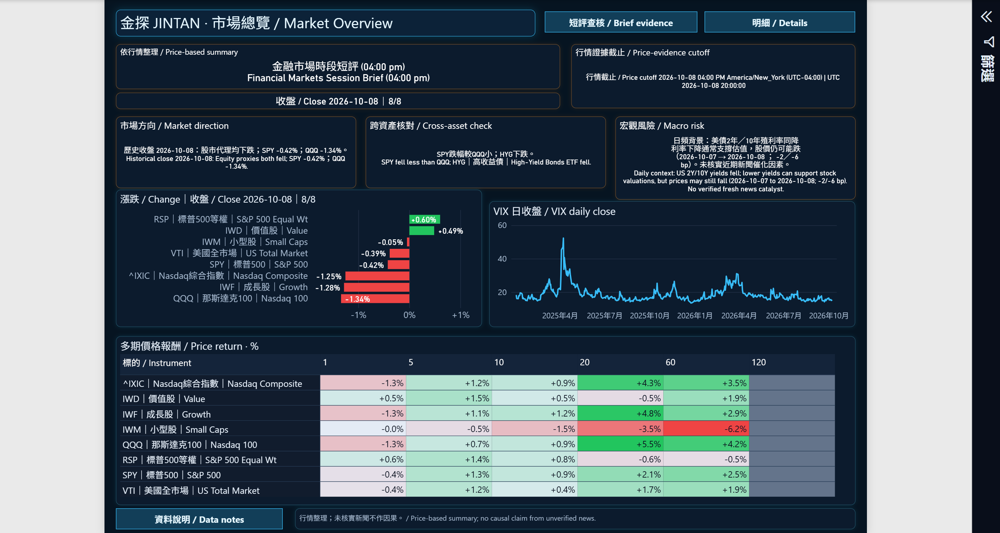
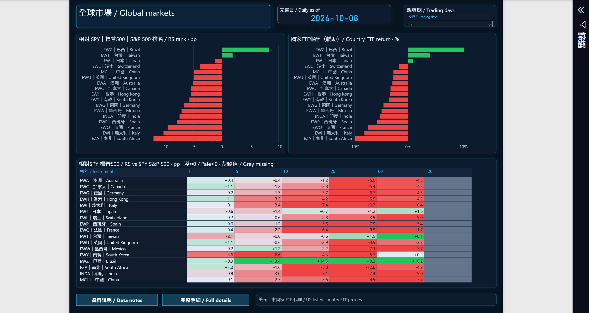
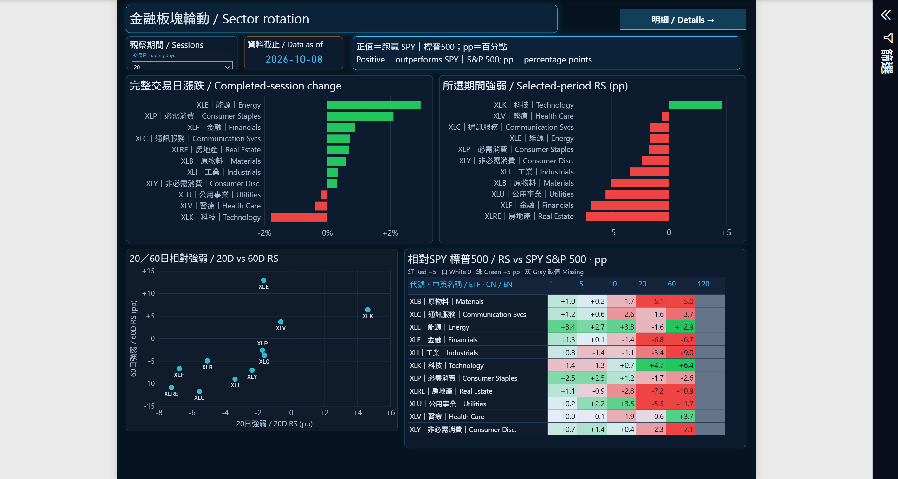
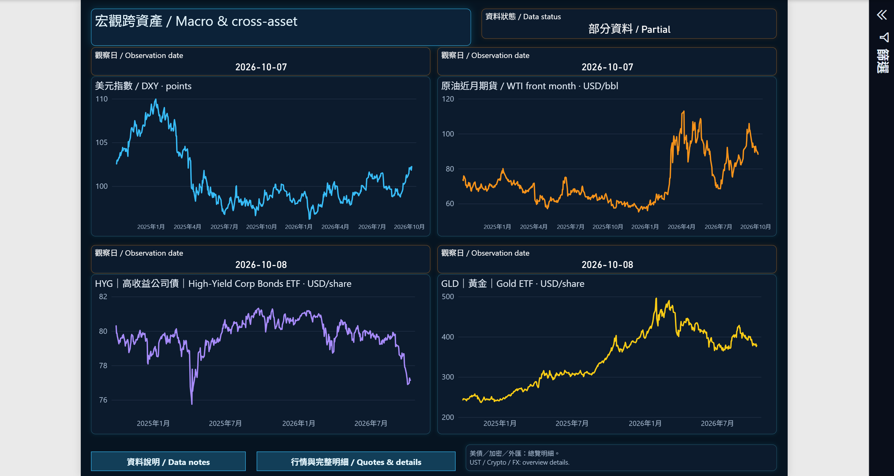
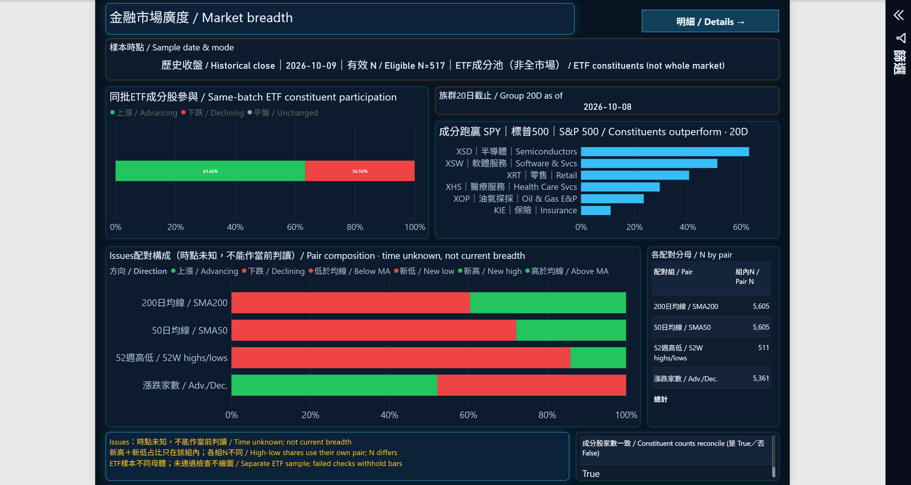
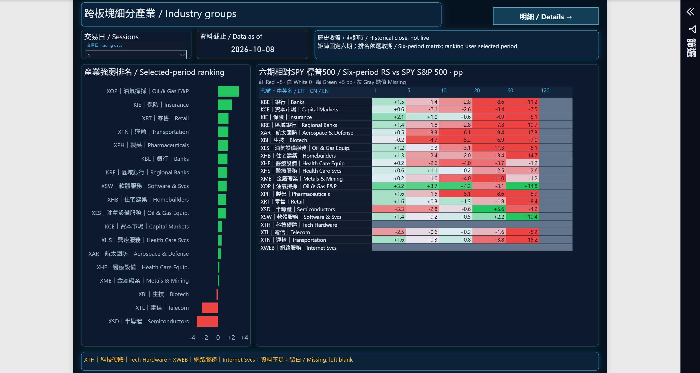
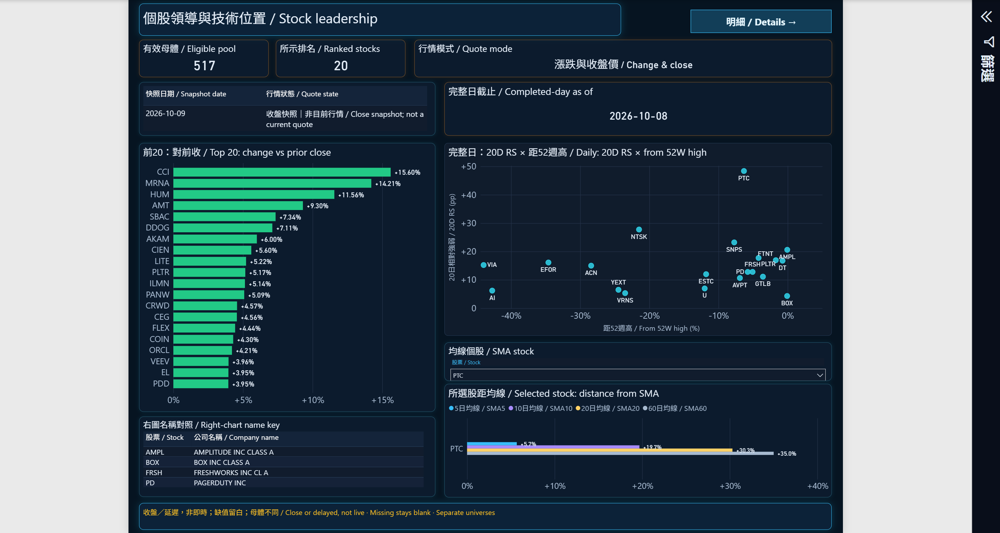

01
市場總覽
Market Overview
市場與風格代理、VIX 日線與多期報酬；短評分開呈現行情證據與宏觀背景。

行情證據截止為 2026-10-08；未核實新聞不作因果解釋。
回到頁首 ↑02
全球市場結構
Global Markets
比較美國掛牌國家／地區 ETF 的報酬與相對 SPY 強弱，保留來源、日期與有效樣本。

美元 ETF 是市場代理，不是當地指數或當地即時行情。RS 以百分點計，報酬以百分比計。
回到頁首 ↑03
金融板塊輪動
Sector Rotation
比較 11 大板塊的單日漲跌、所選期間 RS 與多期熱圖，另以 20 日／60 日 RS 觀察位置。

所選期間與比較口徑須分開閱讀；灰色空白保留缺漏，不補成 0。
回到頁首 ↑04
宏觀跨資產
Macro & Cross-Asset
以美元指數、原油、高收益債與黃金的時間序列觀察跨資產背景。

各來源觀察日不同，保留 PARTIAL 狀態；不是同一時點的盤中快照。
回到頁首 ↑05
市場廣度
Market Breadth
將 ETF 成分有效母體、板塊廣度與外部市場背景分開，呈現上漲／下跌比例和分母。

ETF 成分池不是全美股；不同分母與未知觀察時間保留標示。
回到頁首 ↑06
產業族群
Industry Groups
從 20 檔產業 ETF 池比較所選期間 RS 與多期表現，呈現有效族群及資料缺口。

XTH／XWEB 缺漏保留；120 日空白不代表零報酬。
回到頁首 ↑07
個股領導與技術位置
Stock Leadership
左側為前 20 名收盤快照；右側以完整日候選的 20 日 RS、距 52 週高及均線距離觀察技術位置。

快照日期 10/09 與完整日截止 10/08 分開；左右母體不同，部分散點標籤仍密集。
回到頁首 ↑